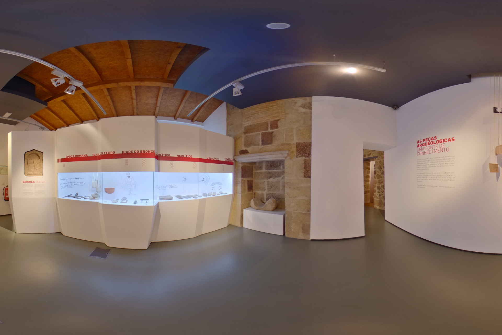
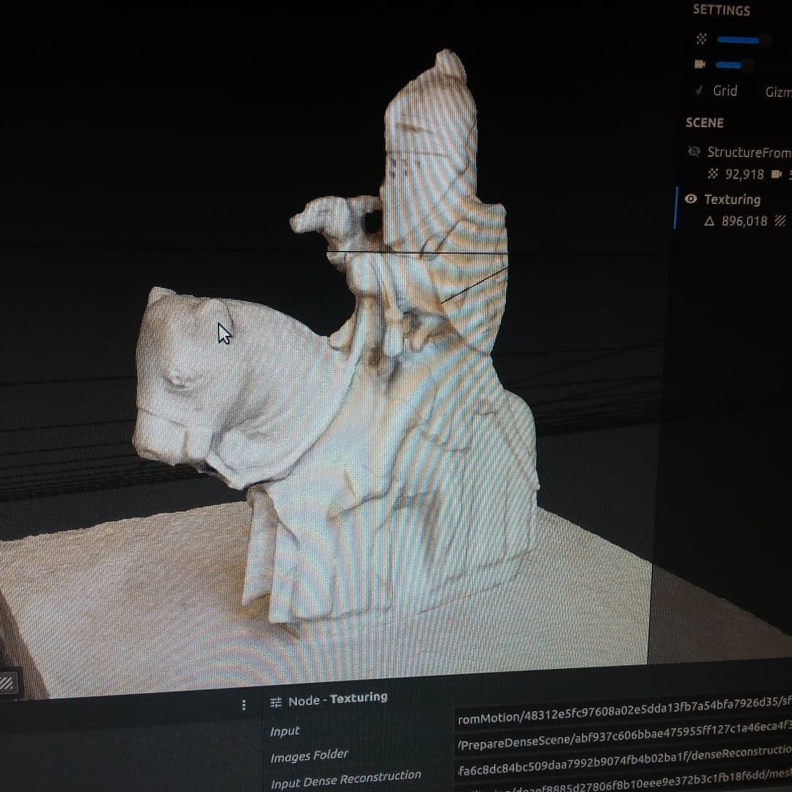
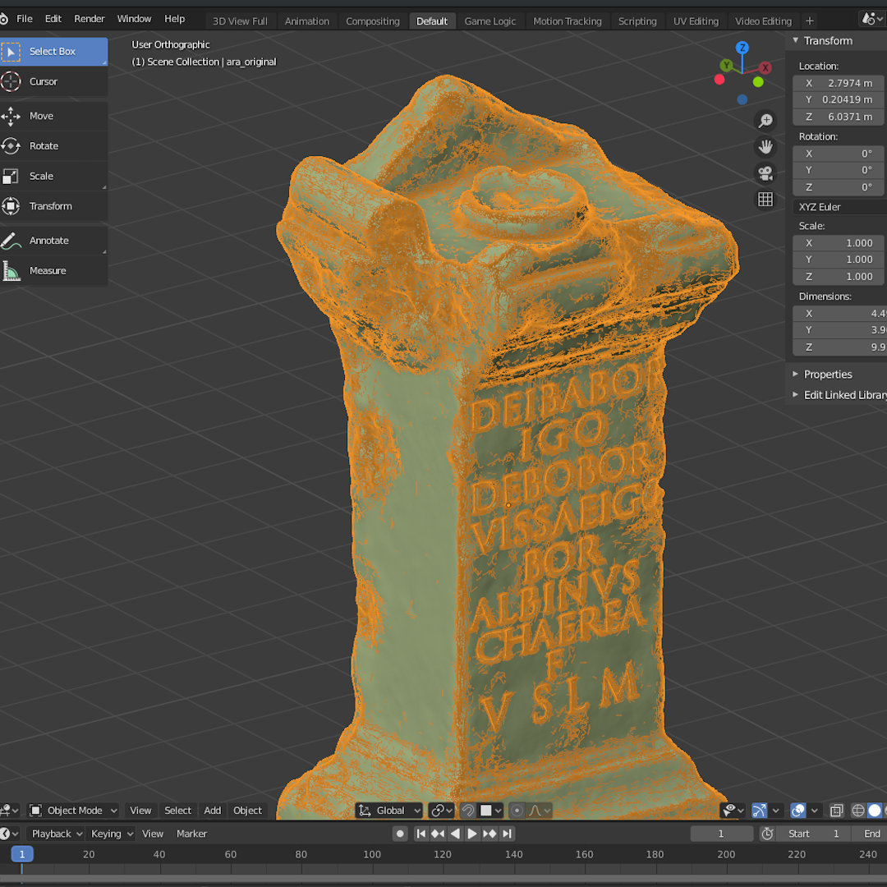
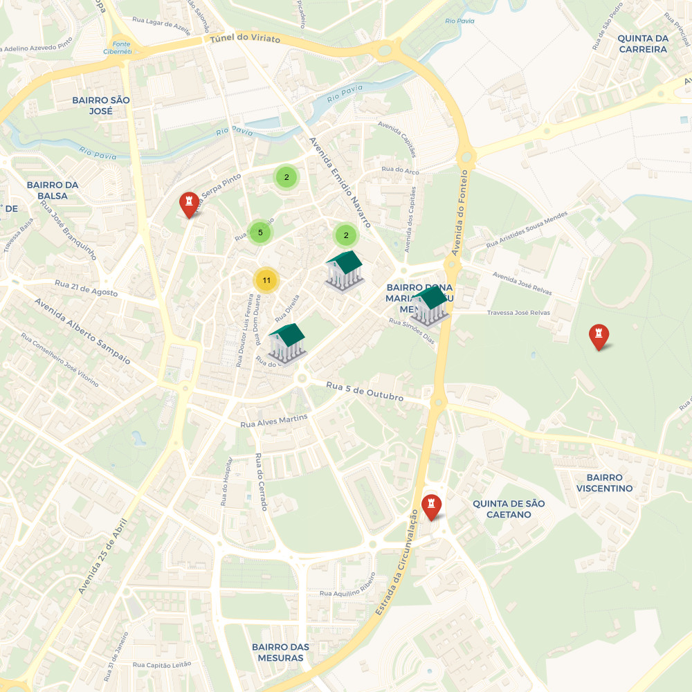
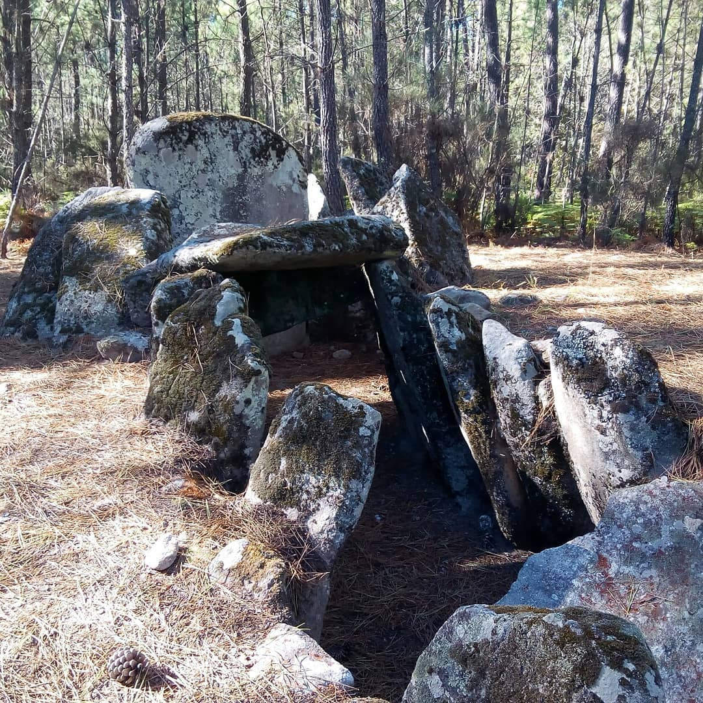
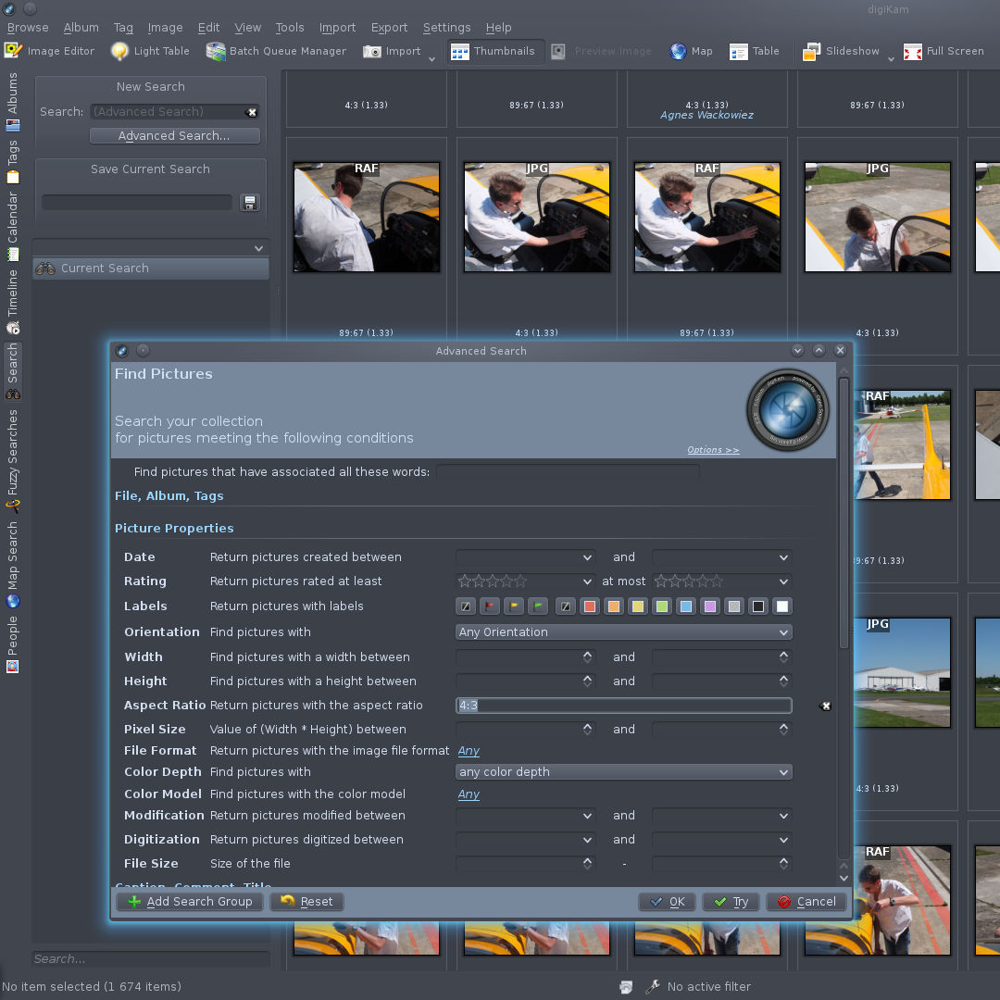
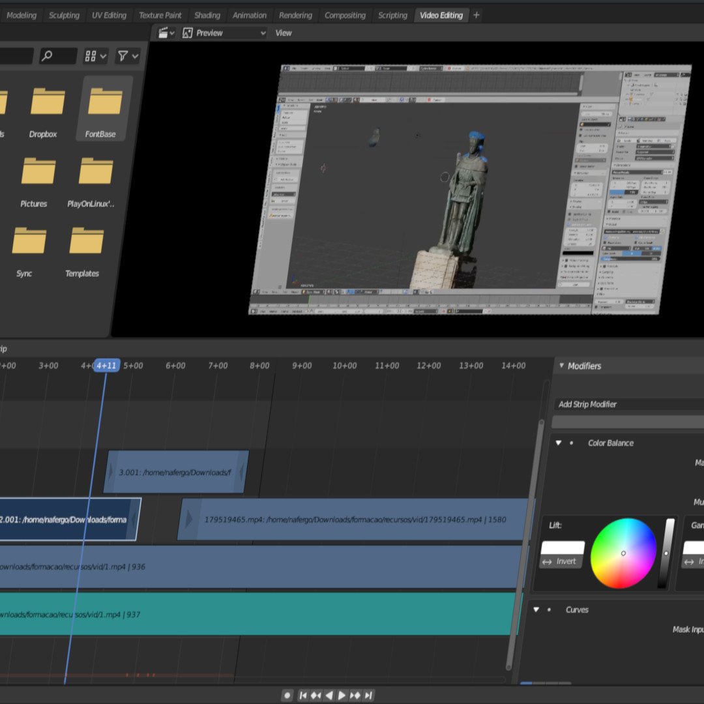
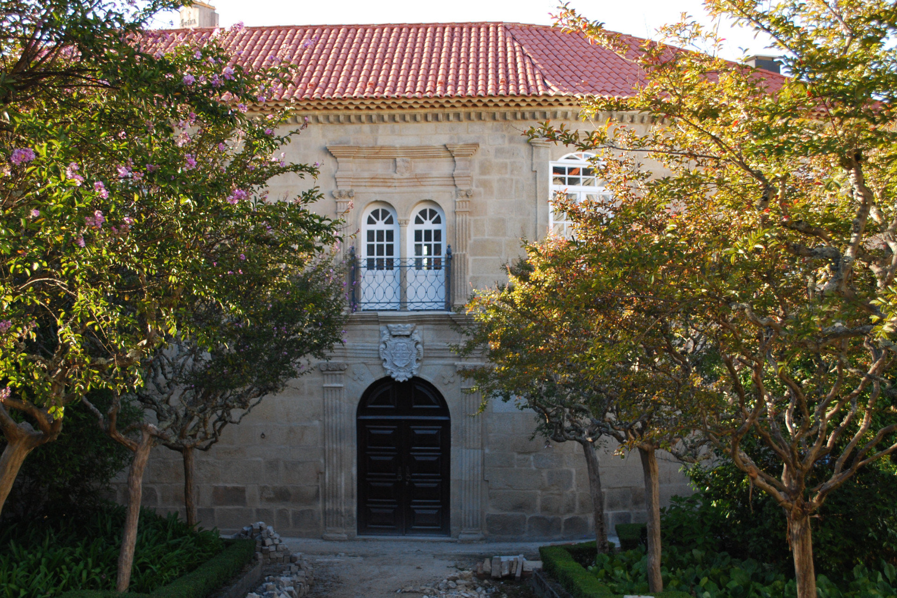
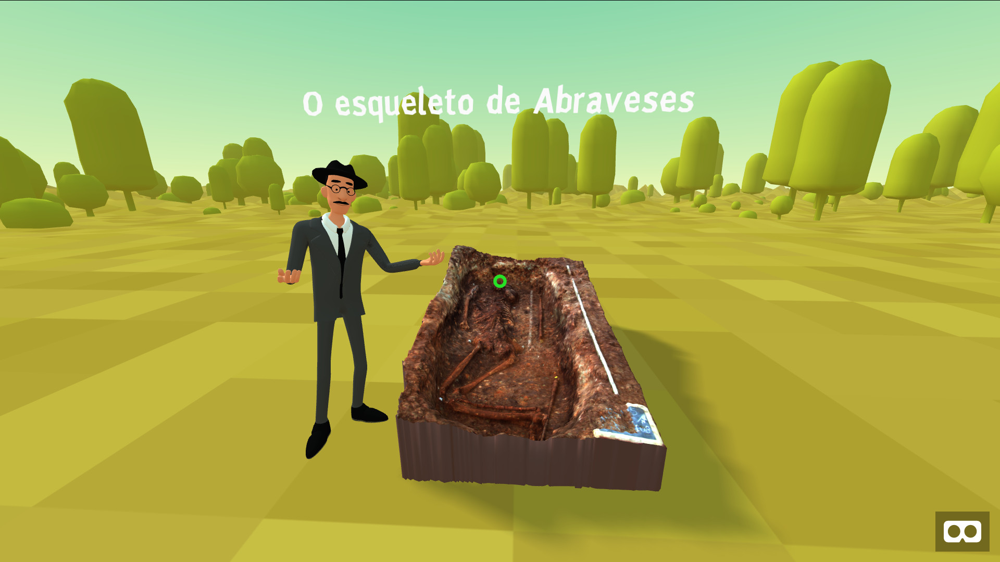

O Projeto NERD LAB do PAV
O Polo Arqueológico de Viseu (PAV) agrega os recursos da Câmara Municipal de Viseu dedicados à Arqueologia do concelho, funcionando como centro operacional para esta área e promovendo o interesse sobre este património enquanto objeto de investigação e elemento de fruição cultural.
O NERD (OpeN HeritagE Research & Development) LAB é um programa do PAV que visa desenvolver e criar estratégias de utilização das tecnologias digitais ao serviço da Arqueologia Formal, Arqueologia Informal e Arqueologia Pública. O programa desenvolve várias iniciativas de natureza diversificada, conjugando o património arqueológico e histórico de Viseu com as tecnologias digitais (fotogrametria, imagem 3D, Web mapping, Realidade Aumentada e Realidade Virtual, SIG, etc.).
divulgação e valorização do património arqueológico e história de Viseu. procurando construir colaborativamente um contributo importante para aumentar o conhecimento e estudo do património arqueológico e história de Viseu. e a sensibilização da população para o património e história de Viseu.

Comunidade
Promover o envolvimento e a participação cultural e cívica na descoberta, valorização e salvaguarda do património arqueológico local.

Tecnologias
Utilizar tecnologias digitais ao serviço do registo, documentação, comunicação, promoção e valorização do património arqueológico de Viseu.

Abertura e Transparência
Implementar estratégias de Open Data, Open Access e Open Source para facilitar o acesso, reutilização e colaboração com especialistas e público em geral.

As Oficinas de formação para 2020
-
Introdução à fotogrametria
7 de marçoFotogrametria designa um conjunto de técnicas que permitem criar modelos 3D a partir de fotografias. Os participantes serão convidados a explorar e experimentar a técnica, incluindo as etapas de captura fotográfica e criação do respetivo modelo 3D, nas instalações da Casa do Miradouro ou na área circundante.

Recomenda-se que traga uma câmara fotográfica (p.ex.Smartphone/telemóvel) e um computador portátil, com os seguintes requisitos mínimos: 64-bit quad core CPU, 4 GB de RAM, placa gráfica Nvidia de 512 MB RAM; Sistema Operativo: Windows 7, GNU/Linux Ubuntu 18.04.
A oficina fará uso de Software Livre e Open Source que será disponibilizado. Sugere-se a instalação prévia do Meshroom, disponível em AliceVision.FORMADOR Nelson Gonçalves
-
Imagem 3D: introdução ao Blender
4 de AbrilA oficina pretende criar um espaço de exploração introdutória ao software Blender, um Software Livre e Open Source para criação 3D. Durante a oficina, serão apresentados alguns casos práticos de utilização de técnicas 3D na área do património arqueológico e histórico. Os participantes serão convidados a desenvolver um projeto simples de criação em 3D.

Recomenda-se que traga um computador portátil, com os seguintes requisitos mínimos: 64-bit dual core 2Ghz CPU; 4 GB de RAM; placa gráfica com 1 GB de RAM, OpenGL 3.3; Sistema Operativo: Windows 7, GNU/Linux Ubuntu 18.04, macOS 10.1.
A oficina fará uso de Software Livre e Open Source que será disponibilizado. Sugere-se a instalação prévia do Blender (versão 2.81 ou superior), disponível em Blender.org.FORMADOR Nelson Gonçalves
-
Web mapping
6 de junhoWeb Mapping e o mapeamento colaborativo são duas tendências atuais que mostram que a criação de mapas online (para planear as férias, registar viagens, etc.) já não são atividades distantes da maioria dos cidadãos.
A oficina tem como finalidade criar um espaço de experimentação e exploração do Web Mapping na documentação, análise e divulgação do património. Serão apresentados alguns serviços, software e casos práticos, com especial destaque para a área do património arqueológico e para a utilização de Software Livre e Open Source. Será desenvolvido um projeto prático de criação de um mapa e sua partilha online, incluindo atividades de recolha dos dados, criação do mapa e publicação.
Recomenda-se que traga um computador portátil, sem requisitos mínimos especiais mas com capacidade de acesso à Internet, deve ter instalado o browser Firefox ou Chrome e um editor de texto + Smartphone/telemóvel (iOS ou Android), com câmara fotográfica e capacidade de acesso à Internet. Os participantes deverão ter acesso a um endereço de correio eletrónico dado que algumas das atividade previstas podem implicar a criação de contas-perfis em serviços online.
A oficina fará uso de Software Livre e Open Source que será disponibilizado.FORMADOR Nelson Gonçalves
-
Software Livre e Open Source para Arqueologia (vol.1)
1 de AgostoA oficina tem como finalidade criar um espaço de experimentação e exploração de um conjunto de aplicações informáticas de Software Livre e Open Source selecionado pela sua utilidade especial para a atividade arqueológica. O software selecionado está longe de esgotar as possibilidades existentes. Areferência Vol. 1 sugere o desafio para futuras edições onde serão partilhadas outras seleções.

Recomenda-se que traga um computador portátil, com os seguintes os seguintes requisitos mínimos: 32-bit dual core 2Ghz CPU, 4 GB de RAM; Sistema Operativo: Windows 7, GNU/Linux Ubuntu 18.04. O computador portátil deverá ter capacidadede acesso à Internet e ter instalado o browser Firefox ou Chrome.
A oficina fará uso de Software Livre e Open Source que será disponibilizado.FORMADOR Nelson Gonçalves
-
Imagem 2D: gestão, análise e armazenamento
10 de outubroImagine milhares de imagens em diferentes formatos, recolhidas ou criadas para finalidades diversas, com conteúdos variados e dispersas por dezenas ou até centenas de pastas. A oficina apresenta algumas sugestões de Software Livre e Open Source para apoiar a gestão, análise e armazenamento digital de ficheiros de imagem.

Recomenda-se que traga um computador portátil, com os seguintes os seguintes requisitos mínimos: 32-bit dual core 2Ghz CPU, 4 GB de RAM, placa gráfica Nvidia de 512 MB RAM; Sistema Operativo: Windows 7, GNU/Linux Ubuntu 18.04, macOS 10.12+.
As atividades da oficina serão desenvolvidas com recurso a Software Livre e Open Source que será disponibilizado. Os participantes são convidados a trazer as suas próprias imagens ou um dispositivo de captação de imagem, a câmara de um Smartphone/telemóvel deverá ser suficiente. Não obstante, será disponibilizado material de apoio às atividades que inclui algumas imagens.FORMADOR Nelson Gonçalves
-
Edição de vídeo
12 de dezembroVivemos uma era de abundante produção de vídeo, uma paisagem que se estende das grandes produções até ao vlog individual ou ao vídeo familiar das férias. As câmaras dos telemóveis ajudaram na democratização dos meios de produção e as redes sociais asseguram a difusão. Nesta oficina os participantes serão acompanhados no desenvolvimento de um projeto prático de edição de vídeo.

Recomenda-se que traga um computador portátil, com os seguintes os seguintes requisitos mínimos: 64-bit dual core 2Ghz CPU; 4 GB de RAM; placa gráfica com 1 GB de RAM, OpenGL 3.3; Sistema Operativo: Windows 7, GNU/Linux Ubuntu 18.04, macOS 10.12+.
As atividades da oficina serão desenvolvidas com recurso a Software Livre e Open Source que será disponibilizado. Os participantes são convidados a trazer os seus próprios vídeos ou um dispositivo de captação de imagem, a câmara de um Smartphone/telemóvel deverá ser suficiente. Não obstante, será disponibilizado material de apoio às atividades que inclui alguns clips de vídeo.FORMADOR Nelson Gonçalves

LOCAL
Polo Arqueológico de Viseu, Casa do Miradouro.
HORÁRIO
10h00-13h00 / 14h00-17h00 (6h)
PÚBLICO
> de 16 anos
VAGAS
15 participantes por sessão.
VALOR DE PARTICIPAÇÃO
10€/sessão
DESCONTOS
20% na inscrição em três sessões, 50% na inscrição em seis sessões.
ISENÇÕES
Alunos do Ensino Superior e Secundário de Viseu (com apresentação de comprovativo).
Se procura informações mais detalhadas, descarregue o
Plano de Formação
Os encontros do NERDLAB
Os encontros são espaços de participação e abertos à comunidade.
Os encontros do NERDLAB acontecem no último sábado de cada mês, a partir das 14h, na Casa do Miradouro.
Num espaço informal de trabalho, trocamos conhecimentos e experiências, apresentamos e colaboramos em projetos, aprendemos sobre Arqueologia, Património e Tecnologias Digitais. Ou seja, construimos algo juntos e estamos

Projetos
Desenvolvidos e os que andamos a fazer :)